A family finance tracker
Getting Started — a simple picture guide
InchWealth keeps the whole family's money in one place: investments, bank balances, expenses, money you lent and loans.
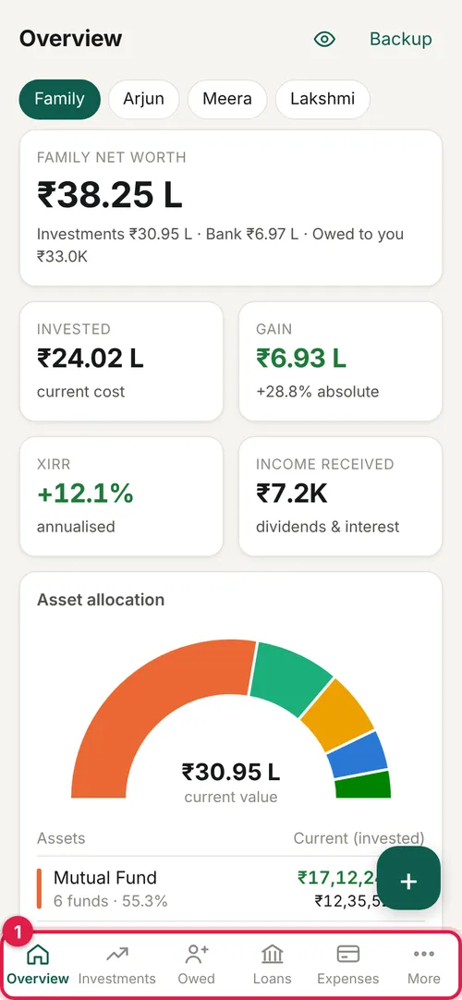
Everything is stored only on your phone and your laptop. There is no account, no cloud and no internet needed — the two devices talk to each other over your home WiFi.
The first screen. It answers "how much are we worth, and is it growing?"
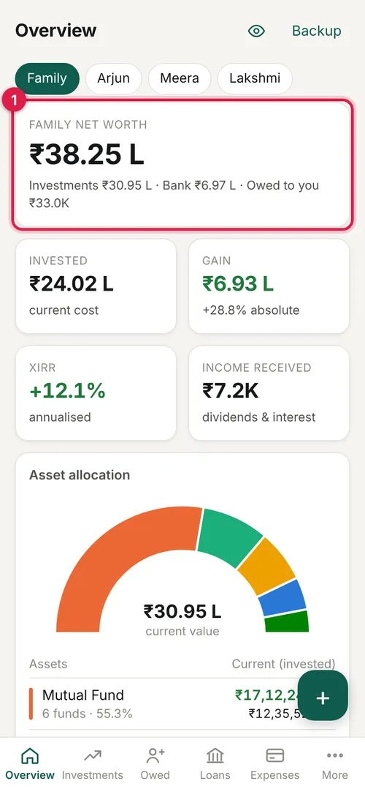
The big number is everything you own minus what you owe:
Investments + Bank balances + Money owed to you − Loans
Below it:
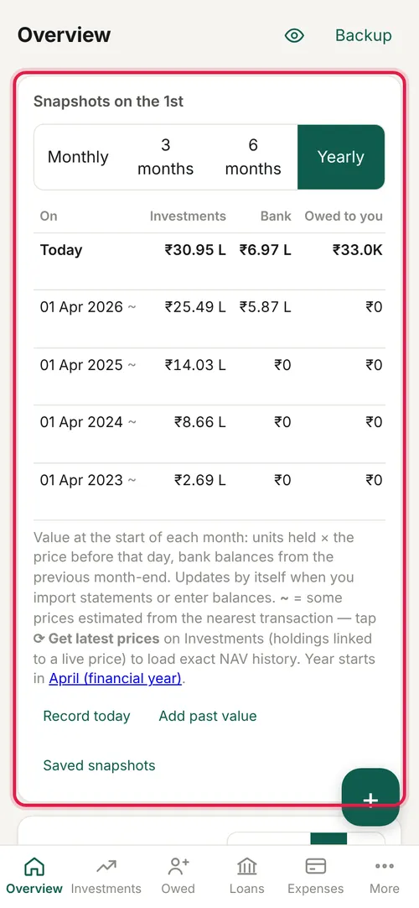
Scroll down to Snapshots on the 1st. It shows your net worth on the first day of each month or year.
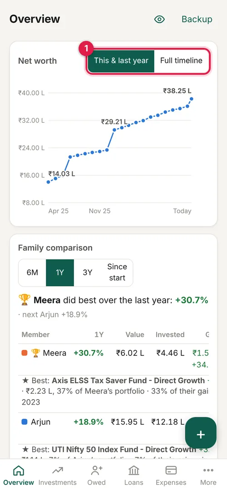
Below Top performers is the Net worth graph. Each dot is your net worth at the start of a month, and the last dot is today.
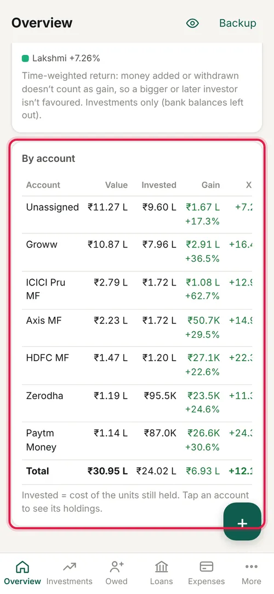
At the bottom of Overview: how much sits with each broker or fund house (Groww, Zerodha, HDFC MF…), what was invested there and the gain.
Tap a row to open those holdings on the Investments tab.
Every share, mutual fund, FD, PPF and gold holding, with what it is worth today.
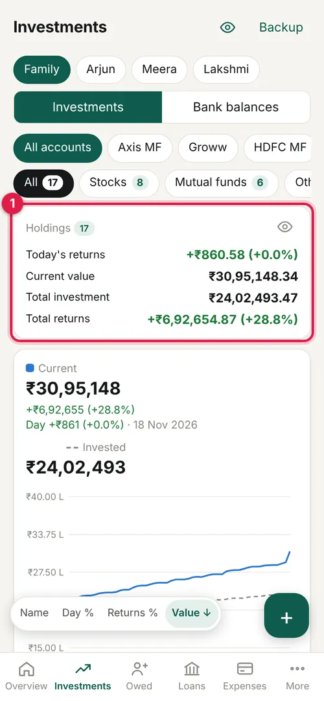
The rows of buttons above it filter the list: by person, by account (Groww, Axis MF…) and by type (Stocks, Mutual funds…).
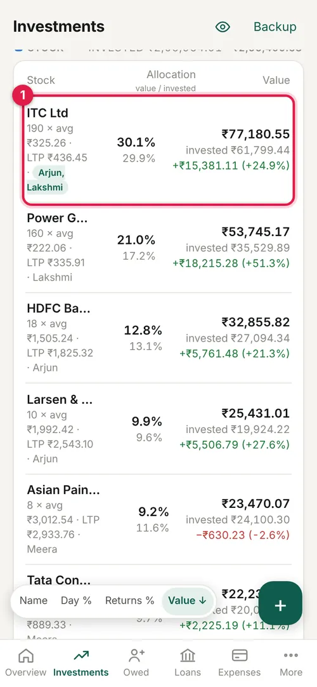
Each line is one share or fund:
Tap a line to see its details.
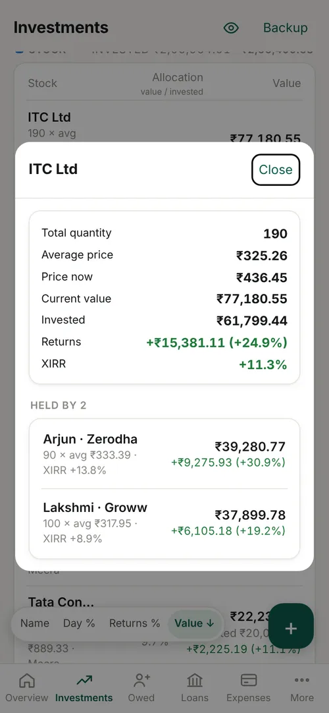
Shows the total quantity, average price, today's price, returns and XIRR.
Held by lists each family member and account holding it — handy when the same share is in two demat accounts.
Tap Close to go back.
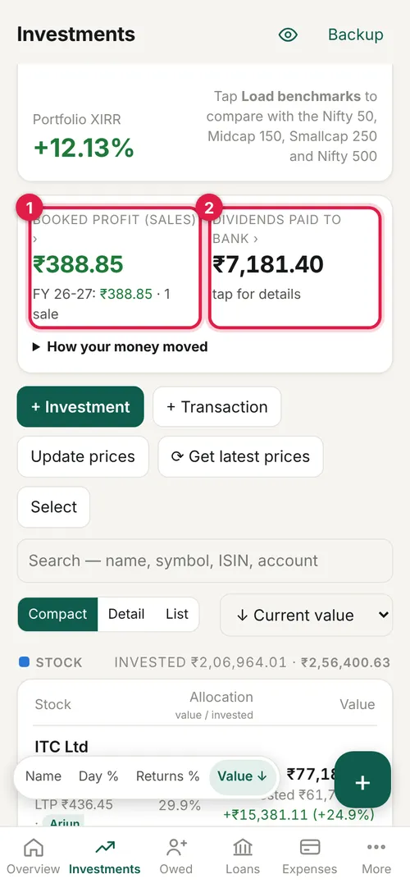
On the Android phone, the app can read the bank, UPI and card alerts you already receive, and note each payment as an expense — no typing.
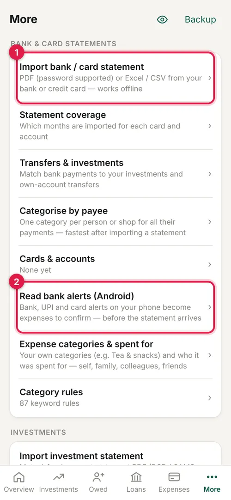
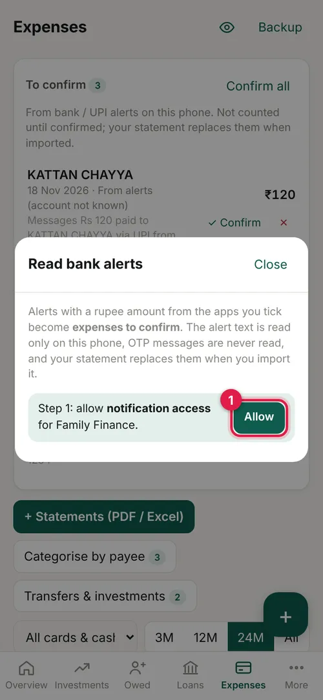
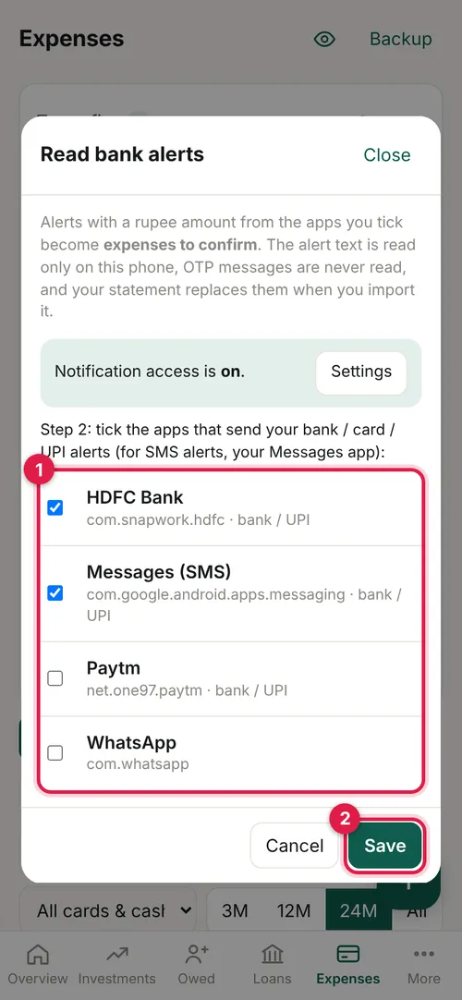
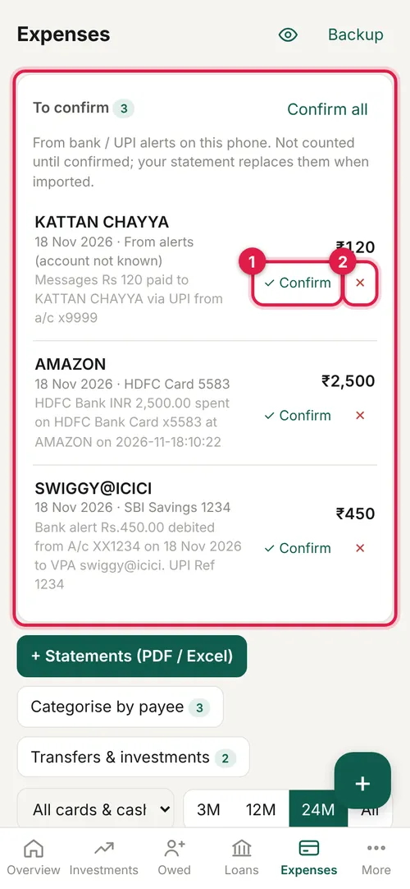
New payments wait in the To confirm box at the top of the Expenses tab. They are not counted until you confirm them.
Import the monthly statement your bank emails you (PDF, Excel or CSV). Every line becomes an expense or income entry, and bank balances are updated.
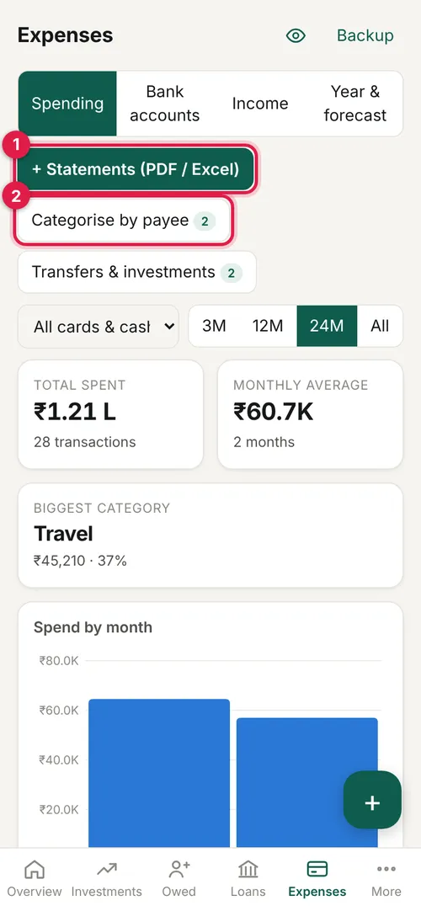
Either:
Then choose the statement file from your phone or laptop.
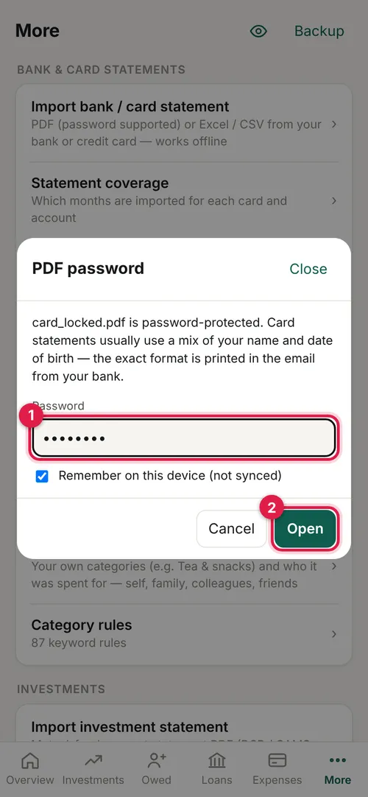
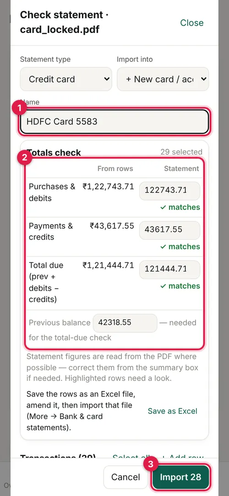
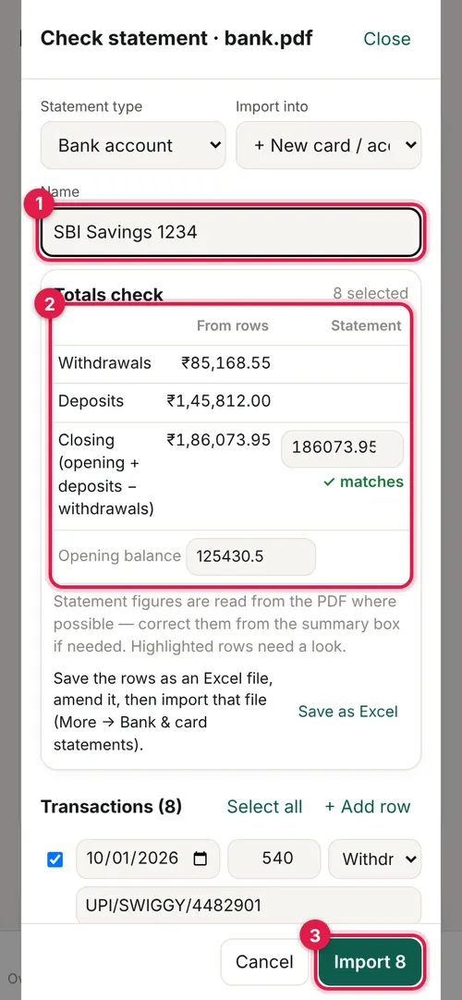
Same steps. Make sure Statement type says Bank account (the app usually guesses right).
For a bank account the app also saves the month-end balance, so your net worth on Overview stays up to date.
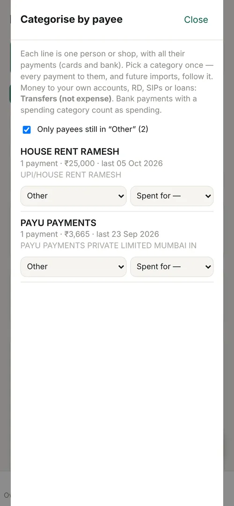
On Expenses, tap Categorise by payee. Each line is one shop or person with all their payments.
The CAS (Consolidated Account Statement) is the monthly PDF that CDSL or NSDL emails you. It lists every share in your demat accounts and your mutual funds.
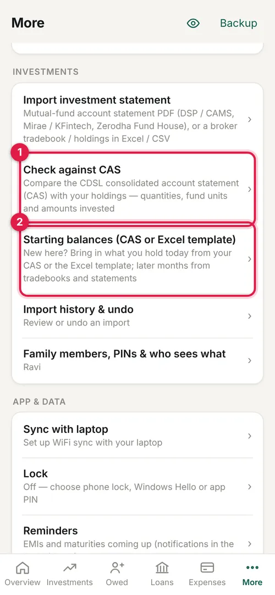
In the More tab, under Investments:
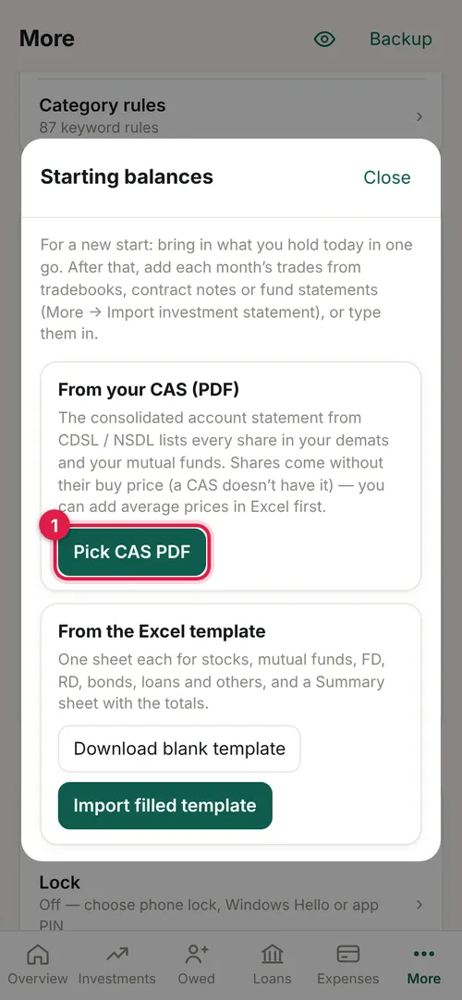
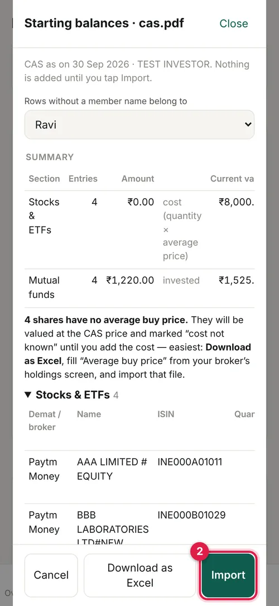
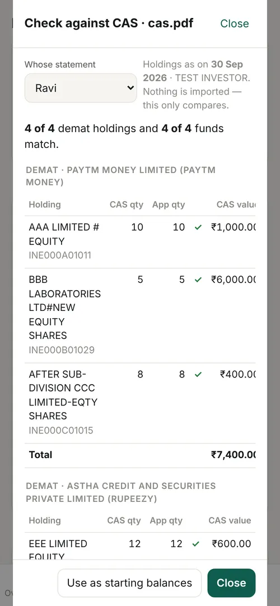
If something does not match, a trade or statement is probably missing — import it, then check again.